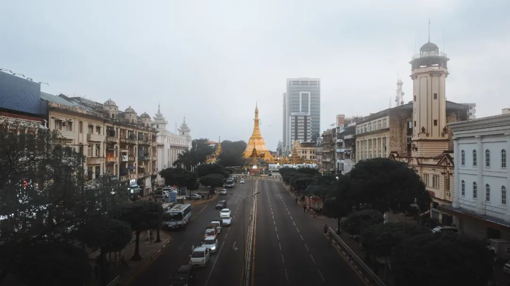

收录于合集
以下文章来源于文化纵横 ，作者高杨
 文化纵横 .
文化纵横 .
倡导文化重建，共同思想未来，发掘不一样的深度阅读。

导读
近日，缅甸民盟组建的“民族团结政府”突然对当前掌权的军政府宣战，形势骤然升级，缅甸再陷内战危机。作为中国的邻国，缅甸的动荡为何值得关注？对整个国际局势有何影响？本文指出， 缅甸内部政治纷争常常指向民主宪政问题， 但第三世界国家的民主宪政问题早已不仅仅是一个国内政治问题，更是一个国际政治问题。 缅甸的“民主宪政”进程背后，其实隐含着中美之间的战略拉锯。 从美国角度看，自其战略重点转向印太地区后，拉拢东南亚各国来遏制中国的目标就始终未变。然而，缅甸是中国当前可以绕过马六甲海峡进入印度洋的唯一陆上通道，也是东盟中唯一不必仰美国鼻息的国家。这也正是美国想通过昂山素季这张政治牌，来插手东南亚事务，遏制中国的关键所在。从中国角度看，中缅之间休戚与共，没有中国的支持与援助，缅甸的国家政权难以巩固；而没有缅甸政府的积极配合，中国在东南亚特别是南海问题上的战略地位就会被动。而 对缅甸来说，具有自主身份意义的“国家建设”——国家自身治理与国家能力培育——依然是其核心问题 。身处中美竞争的中间地带，缅甸军政府也必然会利用这一转寰空间巩固自身的统治。
作品简介
原标题： 《宪法与军火》
作者： 高杨：西北政法大学法学院
来源： 《文化纵横》杂志

Sule Pagoda Road, Yangon, Myanmar (Burma)
正文
2009年8月8日缅甸爆发的“果敢事件”之所以引人注目，一方面在于大量华裔难民越过边境，涌入云南；另一方面，则在于果敢事件牵动了国际政局中一些隐密的线索，其猝发性使得美国及西方社会老调的和谈思路，在缅甸问题上遭遇了尴尬。
如果顺着民主宪政和谈的思路走下去，假如没有果敢事件，或者缅甸联邦军政府军队立即撤出，与果敢佤邦等特区通过和谈的方式解决收编少数民族武装的问题，并“立即无条件释放昂山素季并使她作为一个重要伙伴加入全国对话与和解进程”（潘基文语），积极准备公正的全民大选；之后，在一个真正民选的联合政府基础上加强联邦权威，实现中央集权与地方自治的平衡，从而进一步推进国家建设——沿着和谈的思路，这或许是最理想的结果。
姑且不论这样的思路，在短期内对于一个尚未荡平毒品赌场经济和暴力政治传统的国家现实与否；从理论的视角言之，也的确到了需要认真反思的时候了。 当前英美主流的民主自由话语，往往越过早年的血腥发家史，避谈实力政治、殖民掠夺、种族屠杀诸端，汲汲于用民主自由宪政话语为自身“洗底”，占据文明话语的高地。 殊不知，康德的民主国家之间不会爆发战争的理论推理，早已成为明日黄花；奉若圭臬的民主国家内部，维系政治整合的思路也逐渐从规范主义向现实主义转型，寄望于用福利国家来拯救无公民的民主（Democracy without the Citizen）。一旦涉及自身民族的历史遗留问题，西方的民主宪政同样难免进退失据。
但是，将理想的西方民主宪政推销到西方文明之外的国家，往往更会适得其反——英国人不是曾为缅甸留下过一部宪法吗？一部什么样的宪法呢？在当代的世界格局下，近代孕育西方民主宪政的那种地缘优势与历史情境已不可复制。 在今天这样一个全球化的世界格局中，第三世界国家的民主宪政问题早已不仅仅是一个国内政治的问题，更是一个国际政治问题。 ** ** ********
03
亚洲国家立宪的国外变量
当年布什政府将缅甸和朝鲜视为同类，一再加大对缅制裁。2005年7月，以东南亚推动缅甸实现民主改革的努力不够为由，美国前国务卿赖斯曾拒绝出席在老挝举行的东盟会议。这是美国国务卿有史以来首次缺席有关的年度会议。
奥巴马入主白宫后的外交变化虽引人注目，但不可能有实质性的更动。2009年7月，美国国务卿希拉里高调“重返”亚洲，出席了7月23日在泰国普吉开幕的第16届东盟地区论坛外长会议。此时的美国国内媒体，正大肆炒作缅甸朝鲜核合作问题，希望藉此将缅甸进一步妖魔化。希拉里在接受泰国媒体采访时就缅甸问题表示，“建议东盟可以改变政策，考虑驱逐缅甸出盟”，除非缅甸释放反对派领导人、缅甸全国民主联盟总书记昂山素季。对此，东盟一方面以不干涉缅甸内政为由明确拒绝，另一方面也建议缅甸积极给予美国回应，争取改进缅美关系。22日晚，参加东盟地区论坛的美国代表团在泰国普吉岛“罕见地”与缅甸代表团举行了一次闭门会议，“会议内容有关昂山素季”。
2009年8月15日，美国参议院外交关系委员会重要成员吉姆·韦布造访缅甸，在首都内比都会晤缅甸国家和平与发展委员会主席丹瑞大将。韦布时任美参议院外交关系委员会东亚和太平洋事务小组委员会主席，与奥巴马过从甚密，韦布也是当时访问缅甸并会晤缅政府领导人级别最高的美国政要，在内比都受到了缅甸军政府方面国家元首规格的接待。
韦布在缅甸军政府的安排下密会了昂山素季。昂山素季被捕，是因为2009年5月，美国退伍军人耶托未经缅甸政府许可，秘密游泳潜入昂山素季在仰光的湖畔居所拜会并逗留两晚。耶托离开时遭缅方拘留，缅政府随后以违反软禁规定为由关押昂山素季。缅甸法院8月11日以违反国内安全和移民法律为由判处耶托7年强制劳动和监禁，同时判处昂山素季3年监禁，但政府同一天宣布给予昂山素季缓刑和减刑，减轻为继续软禁18个月。
缅甸官方媒体对此的报道是，丹瑞大将已签署命令，决定减轻对全国民主联盟总书记昂山素季的刑罚，显示缅甸政府已对美国作出回应——“通过下达这一命令，政府已经朝着改变迈出一大步”。缅甸政府8月15日还送给韦布一件“礼物”：释放耶托。
2009年美国高调“重返”亚洲（其实它从来就不曾离开过），不过是想通过南海问题争端进一步拉拢东盟遏制中国。自“失去”中国之后，美国遏制战略就从未发生过改变。 从日本海到孟加拉湾，日本—台湾—东南亚诸国—印度这一战略合围圈上的唯一缺口正是缅甸。 缅甸是中国可以绕过马六甲海峡进入印度洋的唯一陆上通道，也是东盟中唯一不必仰美国鼻息的“无赖”国家。这也正是美国急于通过昂山素季这张政治牌来插手东亚事务，对缅甸进行颜色革命，遏制中国“和平崛起”的关键所在。
中国政府深知缅甸对于中国重要的战略意义，也积极维护与缅甸军政府之间的密切关系。中国通过援建水坝，修建雷达，整修和补给燃料设施，帮助缅甸实现了一些重要战略设施的现代化。缅甸方面投桃报李，向中国提供了面对印度洋的陆路通道，使中国旋即具备了对印度洋的监控和通行能力。在中国的帮助下，缅甸、巴基斯坦和孟加拉还曾举行联合海军演习。随着中缅在军事上的海洋合作日益加深，中国希望能够有效防范印度及东南亚亲美国家对中国的石油海上运输线的遏制能力。
每当美国和国际社会希望加大对缅甸的制裁之时，也都是中国以不干涉内政的理由投票反对。加上双方在合作禁毒与中缅石油管线方面的共同利益和良好合作， 可以说，中缅之间休戚与共：没有中国的政治支持与经济军事援助，缅甸的国家政权就很难巩固；而没有缅甸政府的积极配合，中国在东南亚特别是南海问题上的战略地位就会更加被动。
但缅甸军政府的统治，越来越激起缅甸国内和西方世界的反对。2007年，缅甸爆发了20年来最大规模的反军政府示威游行，数万僧侣和群众高举昂山素季的照片走上街头，西方国家也纷纷响应。美国及其战略伙伴软硬兼施，一方面通过外交接触离间中缅关系，同时利用缅甸军事方面过分依赖中国的弱点，积极通过印度施以军事援助的诱惑。一旦缅美之间的僵局打破，缅甸重要的战略位置就会使其成为多方武器外交拉拢争夺的焦点，也会刺激缅甸军政府开始思考“多边外交”的可能。在这种情况下，缅甸军政府在处理与中国的关系时也就陡增了谈判筹码。
国际形势波诡云谲，中国为防止缅甸在强大的制裁压力和利益诱惑下动摇，必然会尽可能地满足缅甸军政府的各种要求。所以，缅甸军政府拿紧靠中国的果敢开刀，才不会考虑投鼠忌器的问题；而中缅边境的缅甸少数民族虽然与中国的少数民族一母同源，几个自治特区的汉化程度也非常高。但“油浓于血”，缅甸军政府对于中国的能源和战略意义，决定了中国此时也只能止于为果敢难民提供“人道主义的援助”。
因此，缅甸的“民主宪政”进程其实很大程度上系于中美之间的战略拉锯，即中美对缅甸未来政治走向主导权的争夺。反过来，缅甸军政府也必然会利用这一转寰空间巩固自身的统治。
03
缅甸迁都与果敢事件
长久以来，缅甸一直通过联邦的形式维持着一种松散的统一。军政府2003年在没有北方各邦参与的情况下启动的“七点民主政治路线图”，不过是缓解西方社会制裁和舆论压力、争取国际承认空间的应急之策，而非真正意义上壮士断腕的宪政之举。“公投”所通过的宪法在西方社会看来当然也是一部“伪宪”，军政府的真正意图还是要不断强固自身的统治。
2005年11月，缅甸军政府在事前毫无征兆下，突然下令多个部门在11月6日一天内搬迁。新首都“内比都”位于仰光以北约400公里的“彬马那”，缅甸中部的一个县级城市，周围都是丛林山区，位置隐蔽，易守难攻，相对于近靠海岸的仰光而言更有利于防范美国的海路进侵；另一方面，彬马那位于缅甸的中心位置。“当局选择彬马那，是因为它位处中央，能快速到达全国各地”（缅甸资讯部长觉山语），有利于控制北方势力强大的几个少数民族。
果敢事件的根本指向，还是“闪电迁都”所体现的政策思路的延续，即巩固军政府的统治，收编少数民族武装，实现迟早都必须完成的军队国家化的目标。
特别是自2003年以来，昂山素季领导的民盟突然改变策略，从一开始根本不重视争取少数民族武装的做法，转为“强化与少数民族武装的联系”，并向他们大力宣传“民盟的民族政策”以及“在缅甸实行西方民主政治”的治国方针。其效果一是克钦、南掸军等少数民族武装的“离心现象”更为严重；二是开始配合昂山素季所领导之民盟的政治诉求：除了公开要求缅甸政府立刻无条件释放昂山素季之外，还公开要求缅甸政府尽快正式举行“由军政府、民盟与少数民族武装”三方共同参加的政治和解谈判；在西方势力的支持下，昂山素季所领导的民盟与部分少数民族武装开始联手启动“从军政府手中接手缅甸国家政权的民主进程”，2007年的反军政府示威游行就是其中的一部分。
因此，除了军队国家化之外，果敢事件的宪政意义有限。或者说，不能顺着西方民主宪政和谈的思路，对果敢事件作出评价和期许。因为这样的理论套用，容易忽略国家这一至为关键的要素。
无论什么时候，立国都首先意味着对外独立与对内“集权”，只有在创制出足以立国的权力之后，才谈得上限制权力的问题。 回想襁褓初啼时的美利坚合众国，乔治·华盛顿在卸任之际发表意味深长的告别演讲，一再呼吁国人警惕：国外颠覆势力时时都有可能利用国内党争将共和国扼杀于摇篮之中。党争对民主的利用，是政府最危险的敌人。民主只有在爱国主义的框架内才有意义。时移世易，当摇篮中的帝国长大成人，曾经的奴隶压迫、拓疆殖土、“门罗主义”，似乎都被消弥历史的自由民主声浪所淹没。历史可以随着苏联的轰然倒下而在此终结，但国家却并未隐退，只不过转换为一种新的形式。 美国及西方世界的自由民主宪政体制，其在当下的维系，很大程度上是由世界范围的不平等政治经济格局支撑的——以福利国家拯救无公民的民主。落后国家自身的治理问题与国家能力的培育，却不在西方历史的范畴之内。 这些国家一再蜂起的内战和混乱，只有在影响到西方世界利益的情况下才会引致“和平计划”的弹压，但这些国家根本性的主体身份却始终未获得“大同世界”起码的承认和尊重。因此，正如福山的理论转向所示：在惊世骇俗的“终结”之后，历史似乎还要从“国家构建”重新开始。
02
立国为先：军政、训政、宪政
这里并非是要简单否定民主宪政的价值，更不是要为缅甸军政府在其国内的统治辩护，而是希望放大复杂的国际政治格局并对其予以充分的理解。说到底，还是一个民主宪政由谁来主导和主导者希望采取什么步骤的问题。先有国家，之后才谈得上民主宪政。民主宪政是由国家自身来定义的——“民主首先要求同质性”（施米特语），主权之内的同质性。
从长时段的历史来看，亚洲国家延续百年的军政府问题（或类军政府的问题）绝非偶然，某种程度上都是被动向西方主导的现代性转型的必然产物。后发国家的军政府问题，很大程度上都是为了集中权力，实现民族独立与自身对国家政治走向的主导。 在不能兼顾的情况下，民主改革的目标必然受制于民族独立的诉求，这是民族国家的内在本能与自然冲动，是冰冷的“国家理性”的必然要求。 毕竟，西方国家立宪的历史情境与地缘优势已不可再现，现时代更凸显出文明之间的激烈冲突。
因此，立国之后才谈得上立宪限权的问题，建国的逻辑始终支配着民主宪政的进程和步骤。在所有立法者眼中，都不可能按照外部事先确立的规范价值行事，而只能作出当时当地的现实抉择。同样，在现实主义的视野里，主张和谈民主宪政的第三方也并非中立的规范价值的化身，而是希望通过和谈的拖延插入第三方自己的意志和影响。
特别是面对殖民列强分而治之的遗留问题，完成国家的实质统一才是第三世界国家最关键也最为重要的任务。抛开各国的具体境况，孙中山先生三步走的建国方略其实道出了亚洲国家立宪的特殊之处：军政时期即“以党建国”的暴力革命时期，政府用兵力扫除国内之障碍，促进国家之统一；训政时期“以党治国”，完成国家建设与公民教育；宪政时期“还政于民”，推行民主法治。
建国的第一步尤为关键：“在军政时期，一切制度悉隶于军政之下。政府一面用兵力扫除国内之障碍；一面宣传主义以开化全国之人心，而促进国家之统一。”中华民国的巩固，很大程度上是由蒋介石结束军阀割据混战，收编各路人马，从而完成了国家形式上的统一；而中华民国在大陆的所谓“沦陷”，某种程度上也是因为国民党军队内部派系林立，始终难以做到统一指挥与充分调动。中国大陆的实质统一，最终还是要依循中国工农红军，中国国民革命军第八路军、新编第四军，一直到中国人民解放军的路径。
然而， 后发国家的立宪之路，不可能在一个封闭的环境中从容展开，必然与复杂的国际形势纠缠扭结在一起，受制于敌友划分的影响，这就有可能会打破原有的建国方略与既定步骤。 而内战的缘起，往往是在国基未稳之时，或者说是没有彻底完成军政任务的时候，各方就开始争执要不要训政，或者训政时期要不要宪法的问题。国民党在训政时期迫于党内外自由派的压力而制定的“伪宪”（1931年的《中华民国训政时期约法》，是国民政府发布的第一部宪法性文件），与今天缅甸军政府迫于内外压力制定的“民主路线图”何其相似？而“组建联合政府，结束一党训政”的政治口号，更是挡不住谈判桌下的调兵遣将，摩拳擦掌。正是在这一意义上，内战即相当于二次建国，在血与火中锻造的中华人民共和国，等于才补上了中华民国在军政阶段所缺的课。而今天同样是面对军阀割据，缅甸军政府出兵果敢的安内之举，自然遵循的是亚洲后发国家自身的政治逻辑。
03
宪法与军火
** ** **霍布斯在17世纪英国内战的背景下写作《利维坦》，呼告强有力的政治权威胜过无政府状态下的丛林混战。 “在有达致和平的希望时，人人均必须力求和平，凡不能达致和平之时，可以寻求并利用一切外援和战争的有利条件”。时移世易，今天的地缘政治格局又为国内政治权威的确立增加了新的变量，弱小国家国内权威的树立更是离不开战略盟友的支持。 和冷战背景下亚洲国家选择社会主义道路还是资本主义道路的情形类似，缅甸目前的国内政治走向很大程度上也受制于中美之间的战略拉锯。 所以果敢事件爆发以后，面对美国和西方国家的和谈呼吁，中方的官方表态只是“密切关注缅甸事态发展”，并在维护中缅边境稳定的意义上呼吁缅甸民族“和解”——因为对于缅甸政府来说，包括果敢在内的四个特区一直是“主权完整的隐患”，“眼下的果敢战事属于历史遗留问题”。如何应对难民涌入是摆在中国政府面前的一个棘手问题，“但这毕竟只是局部问题，不会影响中缅关系的大局。果敢战事属于缅甸政府内政，中国政府不会出兵。” 中国前驻缅甸大使程瑞声说。
一边是国际社会的民主改革压力，一边是战略盟友的军事支援。除了一纸“全民公投”通过的宪法，缅甸军政府的军火库想必也会日渐充实。无论是防范美国攻击的海防军备，武力收编少数民族军队的大炮坦克，还是散落中缅边境的流弹，都源于不断膨胀的国家机器。在“国家”这一“利维坦”的眼中，暴力的正当性与非正当性之间从来就没有清晰的界限。这一怪兽只信靠国家机器的工具价值，在它的眼中，“每一颗子弹都有归宿”。
排版 | 屈媛媛
本文来自《西亚非洲》，由欧亚系统科学研究会摘编，
文章观点不代表本平台观点。